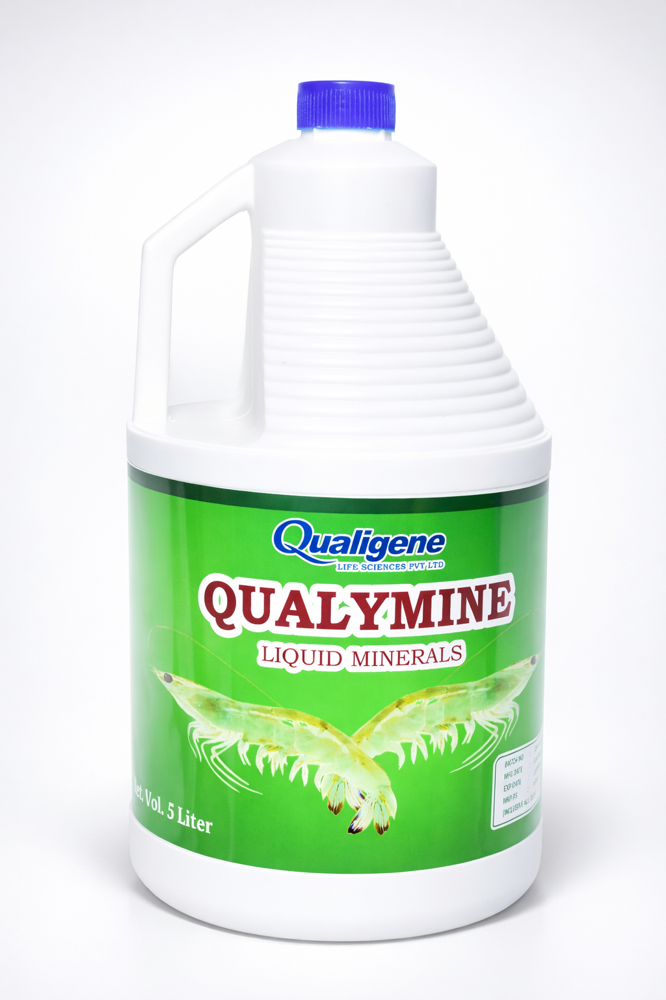
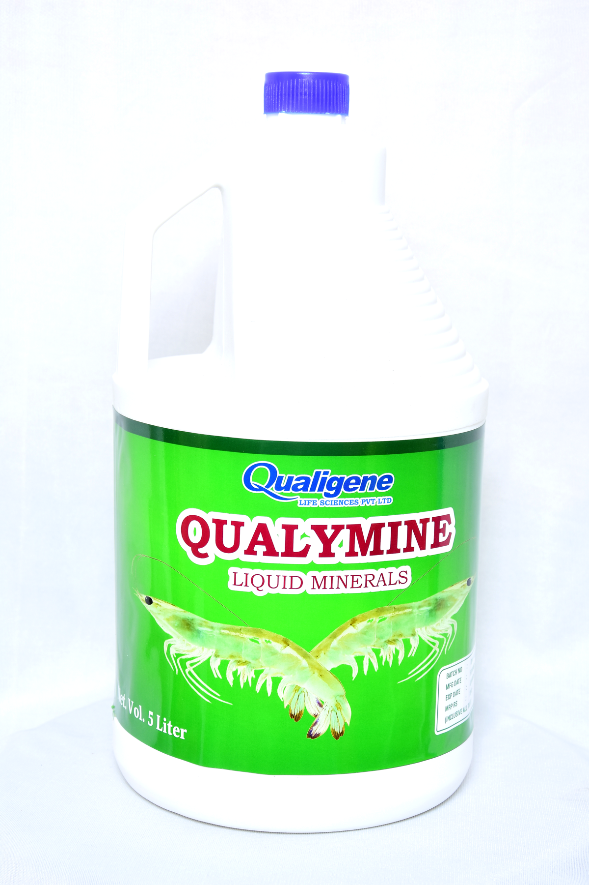

Product overview
Qualymine delivers essential liquid minerals directly into aquaculture pond systems. The 5L format makes it practical for commercial farm use, supporting consistent mineral supplementation across shrimp and fish production cycles.
Aquaculture Nutrition
Qualymine is a liquid minerals solution from Qualigene Lifesciences, formulated for aquaculture systems. Available in 5L, it supports mineral balance, shrimp and fish health, and stronger pond productivity.

Qualymine delivers essential liquid minerals directly into aquaculture pond systems. The 5L format makes it practical for commercial farm use, supporting consistent mineral supplementation across shrimp and fish production cycles.


Actual pack shots give buyers and distributors a clear, credible view of the product before they engage.
The 5L size is suited to commercial farm operations and makes Qualymine easy to position in dealer conversations.
Formulated specifically for pond systems — Qualymine fits naturally into the broader Qualigene aquaculture range.
Qualymine enquiries